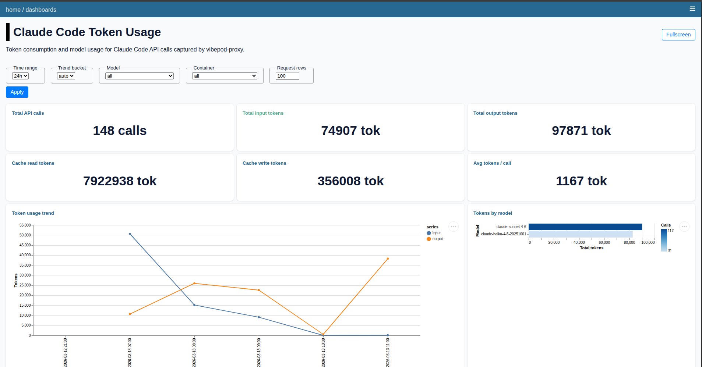
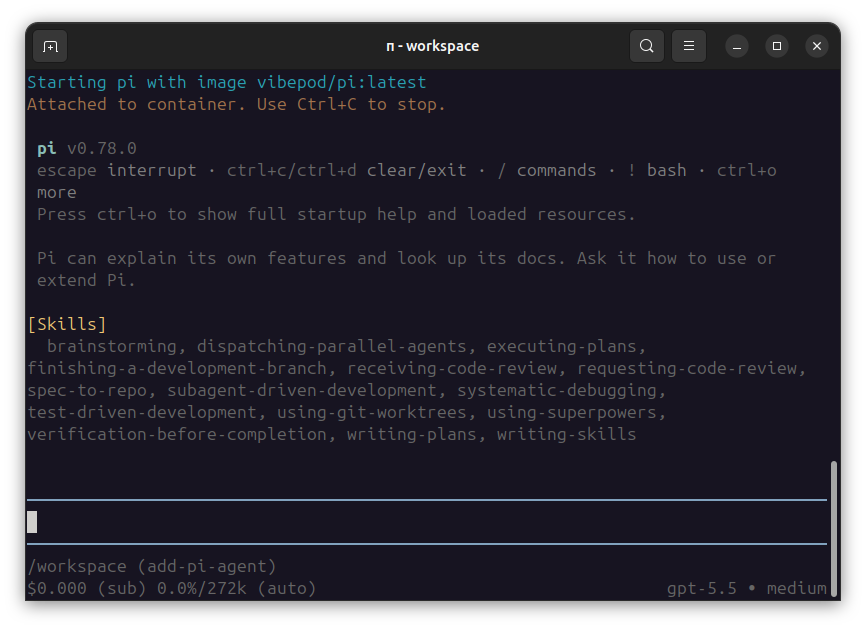

VibePod CLI 0.13: Pi agent support
Pi joins the supported agent matrix, with updated docs, screenshots, image mapping, and website release notes.
Read postZero-config local agents
No YAML required. No setup file required. Just vp run claude in Docker, with reusable skills and a built-in analytics dashboard.
Install VibePod once. Run Claude, Gemini, Codex, Devstral, Copilot, Auggie, OpenCode, or Pi in an isolated container with a single command. Add reusable prompt recipes with vp skills, and add global or project YAML only when you want shared defaults, custom images, env vars, init scripts, or LLM routing.

Latest News
Follow VibePod releases and cross-repository work across the CLI, agent images, dashboard, proxy, website, and packaging repositories.
Pi joins the supported agent matrix, with updated docs, screenshots, image mapping, and website release notes.
Read postThe agent image repository owns Docker targets, build automation, and recent Pi image support.
Read postZero config by default
VibePod ships with major coding agents pre-configured. Start immediately, then add global or project YAML later for overrides your team wants to share.
| Manual setup | VibePod |
|---|---|
| Write YAML before first run | Skip it; defaults are built in |
| Choose and configure a model upfront | Use agent defaults, or set LLM routing later |
| Wire up tools and servers | Optional env vars, init scripts, and custom images |
| Share project defaults | vp config init |
| Run your agent | vp run claude |
Quickstart
Install from PyPI, run any supported agent with no project config, then start the dashboard when you want local metrics.
python -m pip install vibepod
vp run claude
vp logs startTip: pin versions in automation with python -m pip install vibepod==<version>.
$ vp version
VibePod CLI: 0.14.0
Python: 3.12.3
Docker: 28.1.1
$ vp run claude
Starting claude with image vibepod/claude:latestHow it works
Run vp list to see which agents are available in your local setup.
Note: vp list also shows active workspaces.
Start work with vp run claude, then switch agents by rerunning the command with a different name.
Note: the current folder is used as the active agent workspace.
Run vp logs start to launch the local dashboard. It shows HTTP traffic, usage metrics, and lets you compare agents side by side.
Core features
No project file is needed to start. Claude, Gemini, Codex, Devstral, Copilot, Auggie, OpenCode, and Pi are ready out of the box.
Proof point: run an agent with vp run <agent>.
Add .vibepod/config.yaml only when you want team defaults for images, env vars, init scripts, proxy, logging, or LLM settings.
Proof point: create a starter with vp config init.
Track HTTP traffic, usage, and activity per agent from a browser-based dashboard.
Proof point: launch it with vp logs start.
VibePod can start a local mitmproxy container alongside agents and write captured HTTP(S) traffic to SQLite.
Proof point: disable it with VP_PROXY_ENABLED=false.
Install prompt recipes per user or per project, then mount them into supported agents automatically.
Proof point: vp skills add github:vibepod/vibepod-skills//skills/researcher.
Keep long-running containers alive after a terminal closes, then reconnect to a managed container when needed.
Proof point: vp attach <container>.
Override an agent image for a one-off run or persist it in config, and run idempotent shell commands before startup.
Proof point: set VP_IMAGE_CLAUDE=myorg/claude:dev.
Route Claude or Codex to Ollama, vLLM, or another compatible endpoint with config or runtime environment variables.
Proof point: set VP_LLM_ENABLED=true.
When a workspace has Compose files, VibePod can connect an agent container to the right Docker network.
Proof point: use vp run claude --network my-net.
Why VibePod?
| Workflow need | Manual setup | VibePod |
|---|---|---|
| Agent configuration | Write YAML before first run | Pre-configured; YAML is optional |
| Switch agents | Rewrite config and rerun | vp run <agent> |
| Container isolation | Manual Docker setup | Built in |
| Project defaults | Hand-maintain setup docs | Commit .vibepod/config.yaml |
| Usage tracking | Bring your own tooling | Local dashboard |
| HTTP traffic logging | Manual proxy setup | Built in |
| Reusable prompts | Copy instructions between tools manually | vp skills add |
| Agent comparison | Manual notes | Side-by-side dashboard views |
| Data privacy | Depends on vendor and tooling | Metrics stored locally |
Product screenshots
Included screenshots cover the analytics dashboard plus Auggie, Claude Code, GitHub Copilot, Gemini, Mistral, OpenAI Codex, OpenCode, and Pi.




FAQ
Install from PyPI using python -m pip install vibepod, then use the README for command examples.
No. VibePod comes pre-configured for Claude, Gemini, Codex, Devstral, Copilot, Auggie, OpenCode, and Pi. Run vp run <agent> and it starts from the default image.
Yes. YAML is optional. Use global config at ~/.config/vibepod/config.yaml or project config at .vibepod/config.yaml to override defaults, share team settings, set custom images, inject env vars, run init scripts, or configure LLM routing.
The dashboard tracks HTTP traffic, usage over time, and activity per agent. Start it with vp logs start; it opens in your browser and stores data locally.
Yes. The core workflow is local CLI usage so you can run and switch coding agents from your machine in isolated Docker containers.
Yes. Run vp --install-completion to enable auto-complete and speed up command entry and agent selection.
The current working directory where commands are run is used as the active agent workspace.
Yes. The same CLI flow used locally can be scripted for CI/CD jobs.
VibePod currently supports Claude, Gemini, OpenCode, Devstral, Auggie, GitHub Copilot, OpenAI Codex, and Pi.
Use the GitHub issues page to follow changes and request features.
Install from PyPI, start a preconfigured agent, and add YAML only when your team needs shared defaults or deeper customization.